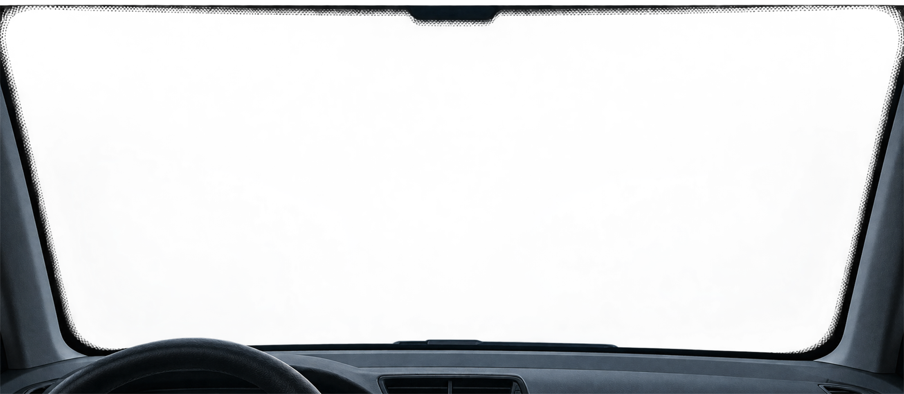

Orientación visual. No reemplaza la evaluación de un especialista.


¿Piquete o
trizadura?
Revísalo antes de que avance.
Identifica el tipo de daño en tu parabrisas con nuestra guía visual y recibe orientación de un especialista.
Guía visual · no reemplaza evaluación en taller
1Tipo de daño¿Qué observas?
2Zona del parabrisas¿Dónde está?
3Resultado orientativoRevisa la recomendación
Nuestros serviciosSoluciones en vidrios automotrices
01Reparación
Piquetes y trizaduras. Recupera la seguridad de tu parabrisas.
02Servicios
Cambio de parabrisas y vidrios automotrices.
03Empresas
Soluciones para flotas y empresas.
04Taller
Tecnología y especialistas en vidrios automotrices.
¿Piquete o trizadura?
Revísalo antes de que avance.
Usa la guía visual para identificar el daño y preparar la información que necesita un especialista.
Una guía clara antes de ir al taller.
Selecciona el daño, su ubicación y tamaño. El resultado es orientativo: una foto o revisión presencial sigue siendo necesaria.
La tabla de decisión está pendiente de validación final con Soimar. La regla confirmada para esta vista previa es: un piquete mayor que una moneda y cerca del borde orienta a cambio.
Diagnóstico visualPaso 1 de 3
El valor está en detener el avance.
Mueve el control para entender qué cambia después de una reparación. La demostración explica el principio; no corresponde a un trabajo real de Soimar.
Piquete estabilizado
La resina ocupa la cavidad y ayuda a detener la propagación. Puede quedar una marca leve: la prioridad es recuperar estabilidad y evitar que el daño avance.
Representación ilustrativa. No es fotografía ni evidencia de un trabajo realizado por Soimar.
Vidrio automotriz, explicado sin rodeos.
La decisión correcta depende del daño, la posición y el equipamiento del vehículo. Primero se evalúa; después se define el trabajo.
Reparación
Piquetes y trizaduras pequeñas pueden ser reparables cuando están lejos del borde y no comprometen la visión. La evaluación confirma si conviene intervenir.
Cambio
Cuando el daño es extenso o está en una zona crítica, se revisa el parabrisas adecuado para el modelo y versión antes de cotizar.
Vidrios laterales y luneta
La rotura de vidrios laterales o traseros suele requerir reemplazo. Disponibilidad, compatibilidad y alcance se confirman caso a caso.
Cámaras y sensores
Si el vehículo integra asistencia a la conducción, la consulta debe identificar su equipamiento para orientar los pasos de calibración posteriores.
Explora el tipo de intervención.
Todavía no hay fotografías verificadas para publicar. Estas vistas son diagramas explicativos y se reemplazarán por trabajos reales cuando Soimar los entregue.
Diagrama de un piquete localizadoRepresentación ilustrativa · no es un trabajo real
De la foto a una decisión clara.
Envía el contexto
Tipo de daño, ubicación, tamaño y una foto nítida.
Revisión inicial
Se orienta si parece reparable o si requiere cambio.
Confirma alcance
Compatibilidad, disponibilidad y datos comerciales antes de agendar.
Visita el taller
La evaluación presencial confirma la solución definitiva.
¿Te observaron el parabrisas en la revisión técnica?
Trae el informe de la planta. Una trizadura que dificulta la visión puede requerir intervención; la evaluación define si corresponde reparar o cambiar.
Una consulta ordenada para cada flota.
Reúne los datos de los vehículos y del daño en una sola solicitud. La modalidad comercial se confirma directamente con Soimar.
- Contexto por unidadPatente, modelo, versión y tipo de daño para evitar idas y vueltas al cotizar.
- Prioridad visibleIndica qué vehículos están detenidos o requieren revisión antes que el resto.
- Alcance confirmadoLa disponibilidad, plazos y condiciones se informan antes de coordinar el trabajo.
La señal disponible es positiva; la muestra todavía es pequeña.
No publicamos testimonios inventados ni elevamos esta cifra al hero. Cuando exista un volumen representativo y contenido verificable, esta sección podrá incorporar reseñas reales.
Preguntas antes de tomar una decisión.
¿Cuándo se puede reparar y cuándo hay que cambiar?
Depende del tamaño, la profundidad y la ubicación. Los daños pequeños, lejos del borde y fuera de la visión del conductor suelen ser mejores candidatos a reparación. Una foto orienta; el taller confirma.
¿La reparación queda invisible?
Puede mejorar mucho la apariencia y ayudar a detener el avance, pero puede quedar una marca leve. Por eso la posición del daño importa tanto como su tamaño.
¿Qué foto sirve para evaluar?
Una toma general del parabrisas y otra cercana, con buena luz y sin reflejos fuertes. Incluye una referencia de tamaño y especifica si el daño está cerca del borde.
¿Cuánto demora el trabajo?
El tiempo depende de la intervención, el vehículo y la disponibilidad del vidrio. La duración se confirma al cotizar; esta vista previa no publica plazos no validados.
Contexto de Valparaíso. El marcador no representa una dirección confirmada.
Integración pendiente · OpenFreeMap · © OpenStreetMapEl taller, sin datos inventados.
La web está preparada para mostrar dirección, horarios, teléfono y coordenadas apenas Soimar los confirme.
Dirección exacta, coordenadas, horario y teléfono: pendientes de confirmación.